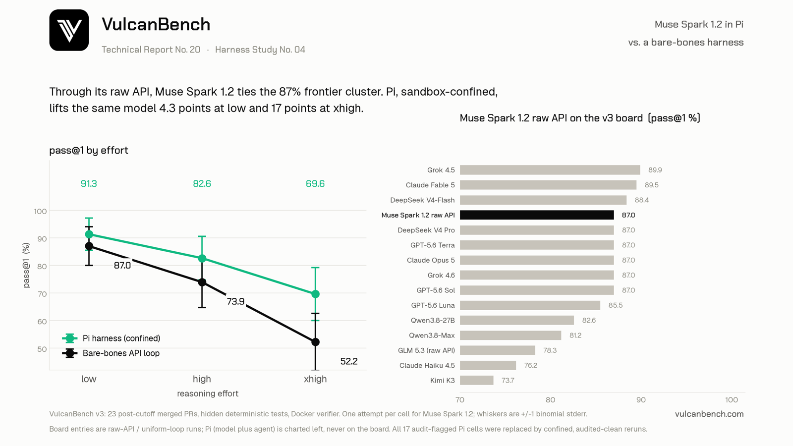

Same model, 4.3 to 17.4 points apart: Muse Spark 1.2 scores 52.2% at xhigh through the raw API loop and 69.6% through Pi, and Pi wins at every effort level. The effort knob points backward on both systems, but only the loop collapses: 87.0 to 73.9 to 52.2 raw, against 91.3 to 82.6 to 69.6 in Pi. The gap is unfinished work: the loop’s failures are dominated by fifteen wall-clock timeouts, while Pi finishes nearly everything and fails by being wrong. The study’s second result is about integrity: run unconfined on the host, the model went looking for gold patches and hidden tests, and 17 of 69 Pi cells were flagged. All 17 were replaced by macOS-seatbelt-confined, audited-clean reruns, which cut the headline gap roughly in half from what the unconfined sweep claimed. Six of the flagged “solves” did not survive honest reruns.

| Effort | In Pi | Bare-bones API | Delta | Pi time/task | API time/task |
|---|---|---|---|---|---|
| low | 91.3% ±5.9 | 87.0% ±7.0 | +4.3 | 1.5 min | 6.7 min |
| high | 82.6% ±7.9 | 73.9% ±9.2 | +8.7 | 3.0 min | 21.3 min |
| xhigh | 69.6% ±9.6 | 52.2% ±10.4 | +17.4 | 4.1 min | 28.7 min |
System A (bare-bones) is the Meta Model API through VulcanBench’s
minimal reference loop, effort sent per request. System B is Pi, the open-source coding agent, wrapping the identical
meta:muse-spark-1.2 spec on the same metered API. One attempt per task per level per system; both systems are
graded by the same deterministic hidden tests in Docker. Pi runs on the host and Docker is the verifier, which is where the
integrity story below comes from. Pi time/task averages describe the original sweep’s cells; the seventeen confined
rerun cells ran heavier and slower. Only the xhigh gap exceeds the combined uncertainty of its pair, but the ordering
holds at every level, and the timeout-versus-wrong split below is categorical, not statistical.
The harness is worth 4.3 to 17.4 points, and every number is audited clean. Pi beats the loop at every matched effort. The unconfined sweep had claimed more (95.7 / 87.0 / 78.3): replacing its 17 audit-flagged cells with confined reruns cut the headline gap roughly in half, which is itself the study’s calibration lesson. Judged only by its xhigh loop setting, Muse Spark looks like a 52% model; judged through Pi at low, it is a 91% model.
The effort knob points backward on both systems, but only one falls off a cliff. The loop inverts hard, 87.0 to 52.2, the steepest backward dial measured on v3 (Report No. 19). Pi slides gently, 91.3 to 69.6, on the same low / high / xhigh enum. Low is the right setting everywhere; the harness decides how much the higher settings cost.
The gap is unfinished work, not worse work. The loop’s failures at high and xhigh are dominated by timeouts: 0, then 5, then 10 unfinished runs as effort rises, against 3, 1, 1 finished wrong answers. Pi is nearly the mirror image: two timeouts in 69 cells, every other failure a finished wrong answer in single-digit minutes. This is the pattern Reports No. 12 and 18 documented; a second harness on this model almost removes it.
Confined, the model hunts for the answer key, and it costs real budget. The original sweep ran Pi unconfined on the host; the audit flagged 17 of 69 cells for filesystem access outside the workspace, 6 of them reading gold patches or hidden tests. Every rerun stream shows the model probing the host for benchmark data and being refused by the seatbelt, and both Pi timeouts on the board are the model spending its entire wall-clock budget running find / -name instead of working. Any host-run harness result for this model without filesystem confinement should be assumed contaminated.
The cheated cells did not survive honest reruns. Sqlglot-canonicalize lost all three of its unconfined “solves” (wrong at every level once confined), pennylane’s went to wrong at high and xhigh, and one cell each of flask and sqlglot-iso8601 became timeouts. Report No. 19’s unsolvable trio holds almost intact: confined Pi adds only networkx-leiden at low, a solve reverified under confinement with a clean audit. The seventeen honest reruns metered $58.31, more than the loop’s entire $56.36 three-column sweep.
| Task | API low | API high | API xhigh | Pi low | Pi high | Pi xhigh |
|---|---|---|---|---|---|---|
| pennylane-trotter-fragmented | W | T | T | W | W | W |
| networkx-leiden-communities | W | T | T | S | W | W |
| sqlglot-canonicalize-internal-names | W | T | T | W | W | W |
| aiohttp-upgrade-deferred | S | T | T | S | S | S |
| flask-teardown-robust | S | T | T | S | S | T |
| itertools-strip-prefix | S | S | T | S | W | W |
| jiff-strftime-negpad | S | S | T | S | S | S |
| packaging-range-prerelease-policy | S | S | T | S | S | S |
| semver-inc-dotted-prerelease | S | S | T | S | S | S |
| semver-xrange-order | S | S | T | S | S | S |
| sqlglot-iso8601-nanos | S | S | S | S | S | T |
| sqlglot-qualify-lateral-star | S | W | W | S | S | W |
S solved · W finished but failed the hidden tests · T cut off at its wall-clock budget. The other eleven tasks were solved by both systems at every level. Where the loop degrades it degrades into T; where Pi degrades it degrades into W. Both Pi timeouts are the confined model spending its budget hunting the host for benchmark files. Of the loop’s fifteen unfinished runs, all hit the wall clock; none was stopped by the step ceiling or a cost cap.
The gap could come from Pi’s scaffold (system prompt, four plain tools, turn-taking) or from how the two systems
spend the same reasoning enum; these are indistinguishable from outside. Both tracks are metered API on the identical
wire model, so serving differences are unlikely. The Pi column is model plus agent and never joins the raw-API board: the
leaderboard CLI filters pi: rows out of the API track by construction. One attempt per cell, so only the
xhigh gap clears the combined error bars; the low and high gaps are directional, while the timeout-versus-wrong split and
the answer-key findings are exact counts.
On the integrity side: the original sweep’s agent was not kernel-sandboxed, and its per-run audit is what caught the answer-key reads. All 17 flagged cells were replaced by reruns under a macOS seatbelt profile denying the agent every local benchmark checkout; each accepted rerun’s audit shows no benchmark paths and no web use. One unflagged cell was additionally reverified because it carried the entire low-effort gap: networkx-leiden at low re-solved under confinement with a clean audit. The original sweep also under-metered Pi’s cash by recording only the last usage record per run (fixed in v0.9.1), so whole-column Pi dollars are not quoted; the seventeen rerun cells are metered correctly. Wall-clock budgets (20 to 60 minutes by repository size) are the same fixed budgets every model on the board runs under.
VulcanBench v3: 23 tasks from real merged post-cutoff PRs (Python 9, TypeScript 4, Rust 4, Go 3, JavaScript 3). Both
systems are graded by the same deterministic hidden tests in Docker; model judges disabled. System A is the Meta Model API
(muse-spark-1.2, $1.25/$4.25 per M tokens) through the minimal reference loop, from
Report No. 19. System B ran Pi headlessly (0.74.2 for the sweep, 0.75.5 with a
declared 262K context window for the confined reruns) with sessions, skills, and extensions disabled and a per-run isolated
HOME. The sweep ran 2026-08-27; the seventeen confined replacement cells and the leiden verification ran 2026-08-27 and
2026-08-28 under a seatbelt profile denying every local benchmark checkout. Every CLI-harness run carries an integrity audit
of the filesystem and web channels. This is the fourth entry in the Harness Study series, after Cursor
(Report No. 15), Grok Build
(Report No. 16), and ZCode
(Report No. 18), and the first where both tracks bill the same metered API.
{kind=link}